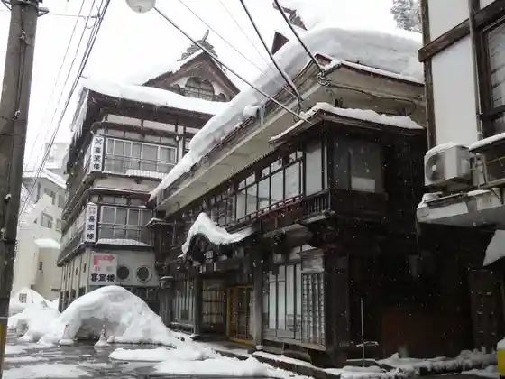
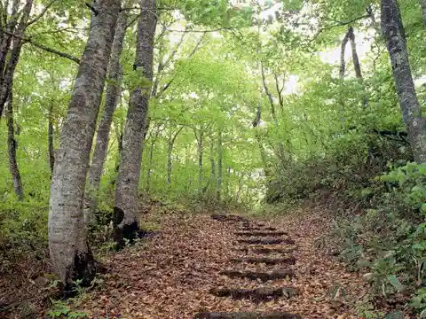
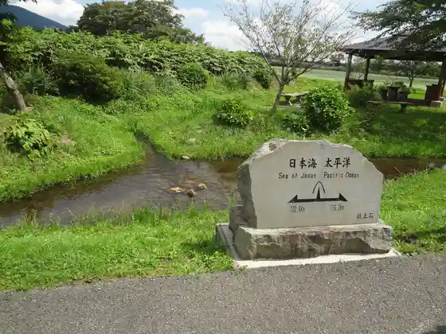
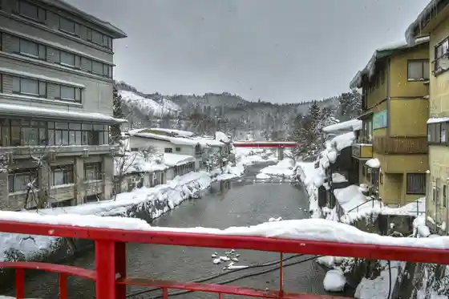

Se Ken Onsen
Mogami, Yamagata · 0233-42-2123 · Official / source link

Yamagatana Batsu Toge
Mogami, Yamagata · Official / source link

Sakai Ta Bunsuirei
Mogami, Yamagata · 0233-43-2262 · Official / source link

Akakura Onsen
Mogami, Yamagata · 080-1660-4083 · Official / source link

Se Ken Onsen Kyodo Bath Semi Baths
Mogami, Yamagata · 0233-42-2123 · Official / source link
Kyu Ariji Ie House (Hojin no Ie)
Mogami, Yamagata · 0233-45-2397 · Official / source link
Mae Moritaka Hara Koteji
Mogami, Yamagata · 0233-43-3522 · Official / source link
Mae Mori Highlands
Mogami, Yamagata · 0233-43-3522 · Official / source link
Wakuwaku Farm Mae Mori Highlands
Mogami, Yamagata · 0233-43-3522 · Official / source link
Yana Chaya Mogami
Mogami, Yamagata · 0233-44-2577 · Official / source link
Roadside Station Mogami (Attsue)
Mogami, Yamagata · 0233-32-1137 · Official / source link
Ohori Onsen
Mogami, Yamagata · 0233-43-2233 · Official / source link
Atago Yama Park
Mogami, Yamagata · 0233-43-2111 · Official / source link
Orada no Kawa Park
Mogami, Yamagata · 0233-44-2822 · Official / source link
Garyu Yama Tentoku Tera (Soto Shu) / Mogami Sanju San Kannon Bangai Yo Sho Kannon
Mogami, Yamagata · Official / source link
Nami Kozan Higashi Zen In Kosei Tera (Tendai Shu) / Mogami Sanju San Kannon Dai 31 Ban Tomizawa Kannon
Mogami, Yamagata · Official / source link
Mogami Shirakawa Keiryu Shirakawa Damu Park
Mogami, Yamagata · 0233-43-2111 · Official / source link
Se Ken Gorge
Mogami, Yamagata · Official / source link
Ji Unzan Meigaku In (Tendai Shu) / Mogami Sanju San Kannon Dai 32 Ban Taro Ta Kannon
Mogami, Yamagata · Official / source link
Kame Wari Koyasu Kannon
Mogami, Yamagata · 0233-42-2123 · Official / source link
Yagen Baths
Mogami, Yamagata · 0233-42-2123 · Official / source link
Yamagataken Mogami Akakura Onsen Ski Area
Mogami, Yamagata · 0233-45-2901 · Official / source link
Mogami Nishikoen Onsui Puru
Mogami, Yamagata · 0233-44-2226 · Official / source link
Benkei no Suzuriishi Nage Matsu
Mogami, Yamagata · 0233-42-2123 · Official / source link
Gongen Yama no Dai Katsura
Mogami, Yamagata · 0233-43-2111 · Official / source link
Mae Mori Highlands Cherry Blossoms
Mogami, Yamagata · 0233-43-3522 · Official / source link
Tomizawa no Tochi no Ki
Mogami, Yamagata · 0233-45-2217 · Official / source link
Banki no Hara Cherry Blossoms
Mogami, Yamagata · 0233-25-8450 · Official / source link
Sukii Experience / Akakura Onsen Ski Area
Mogami, Yamagata · 0233-45-2901 · Official / source link
Se Ken Onsen Cherry Blossoms
Mogami, Yamagata · 0233-42-2123 · Official / source link
Mogami Nishi Park
Mogami, Yamagata · 0233-44-2226 · Official / source link
Mogami Nishi Park Cherry Blossoms
Mogami, Yamagata · 0233-25-8450 · Official / source link